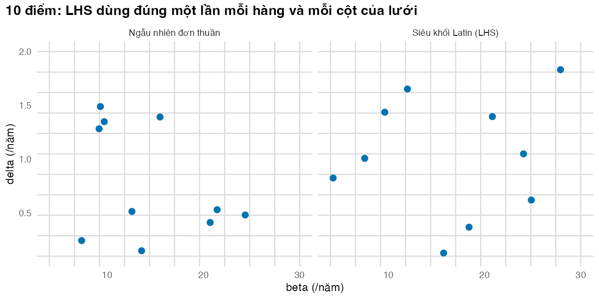
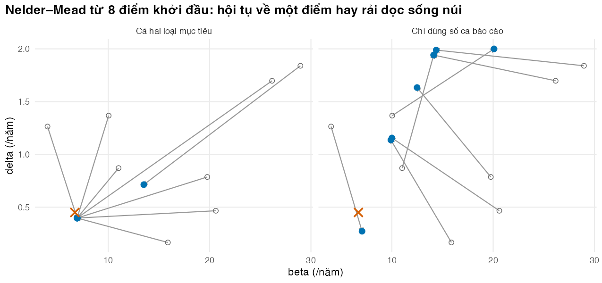

if (!isTRUE(l10n_info()[["UTF-8"]])) invisible(Sys.setlocale("LC_CTYPE", "en_US.UTF-8"))
source("../_shared/R/helpers.R")
source("../_shared/R/vn_data.R")
source("code/model.R")
library(ggplot2)
p <- tb_params()
pc <- read_params("params/calibration.csv")
bounds <- prior_bounds(pc)
th_true <- theta_true(pc)
targets <- make_targets(p, pc, seed = 2025) # SIMULATED targets (see Lesson 1)Bài 2: Tìm kiếm tham số: ngẫu nhiên, siêu khối Latin và Nelder–Mead
Tìm bộ tham số phù hợp nhất và dùng nhiều điểm khởi đầu để biết có nên tin nó không
Vì sao bạn nên quan tâm?
Bạn xây mô hình cho kế hoạch chống lao quốc gia và cần dự báo số ca lao đến năm 2030. Trong tay chỉ có số ca báo cáo hằng năm, năm 2024 là 105.4 ca trên 100,000 dân (World Health Organization 2026), và điều tra hiện mắc 2017–2018 với 322 ca trên 100,000 người lớn (Nguyen và c.s. 2020). Máy tính xách tay chạy mô hình của module này cho 1,000 bộ tham số trong 0.12 giây. Nhưng mô hình dùng cho chính sách thường có nhiều tham số cần hiệu chuẩn. Với 12 tham số, lưới chỉ 10 giá trị cho mỗi tham số cần \(10^{12}\) lần chạy, tức khoảng 4 năm máy chạy liên tục. Bài này chọn cách tìm kiếm cho ra bộ tham số tốt nhất trong vài giây, và cách biết có nên tin bộ đó hay không.
Mục tiêu học tập
Sau bài này, bạn có thể:
- Giải thích vì sao lưới đầy đủ không dùng được khi số tham số hiệu chuẩn tăng.
- Viết từ đầu hàm lấy mẫu siêu khối Latin (Latin hypercube sampling, LHS) và so sánh nó với lấy mẫu ngẫu nhiên đơn thuần.
- Dùng
optim()với thuật toán Nelder–Mead trên một thang không giới hạn để tìm bộ tham số phù hợp nhất mà không ra khỏi khoảng cho phép. - Chạy Nelder–Mead từ nhiều điểm khởi đầu và đọc kết quả để phát hiện cực trị địa phương hoặc tính không nhận dạng được.
Ý chính
- Lưới đầy đủ với \(m\) giá trị cho mỗi tham số và \(k\) tham số cần \(m^k\) lần chạy. Lưới ở Bài 1 chỉ khả thi vì có ba tham số.
- Tìm kiếm ngẫu nhiên và LHS rải các bộ tham số khắp khoảng cho phép rồi giữ các bộ phù hợp nhất. Cách này đơn giản, dễ chạy song song, không bị mắc kẹt, nhưng tốn nhiều lần chạy khi vùng phù hợp hẹp.
- LHS bảo đảm mỗi tham số được phủ đều trên toàn khoảng của nó. Nó không bảo đảm tìm được bộ tốt hơn tìm kiếm ngẫu nhiên trong một bài toán cụ thể.
- Nelder–Mead là thuật toán tối ưu không cần đạo hàm, mặc định trong
optim(). Nó đi xuống rất nhanh nhưng chỉ tìm được cực tiểu địa phương gần điểm xuất phát. - Đổi biến kiểu logit trong khoảng tiên nghiệm giúp thuật toán không bao giờ thử giá trị vô nghĩa, như tỷ suất âm.
- Chạy từ nhiều điểm khởi đầu là phép kiểm tra rẻ nhất: điểm kết thúc trùng nhau là dấu hiệu tốt; điểm kết thúc rải rác với mức phù hợp như nhau là dấu hiệu không nhận dạng được, dù
optim()báo đã hội tụ. - Bộ phù hợp nhất không phải giá trị thật, vì nó khớp cả nhiễu trong mục tiêu. Một điểm ước lượng cũng không cho biết bất định; đó là việc của Bài 3.
Nội dung
Từ lưới đến tìm kiếm ngẫu nhiên
Bài 1 vẽ được mặt log của hàm hợp lý (log-likelihood) vì chỉ có ba tham số hiệu chuẩn. Một mô hình lao dùng cho chính sách thường hiệu chuẩn hàng chục tham số; lưới đầy đủ khi đó cần nhiều lần chạy hơn mọi máy tính có thể làm. Cách đơn giản nhất là tìm kiếm ngẫu nhiên: rút \(N\) bộ tham số trong khoảng cho phép, chạy mô hình cho từng bộ, rồi giữ bộ phù hợp nhất hoặc mọi bộ đạt một tiêu chí chấp nhận (ví dụ log-likelihood không thấp hơn cực đại quá một ngưỡng). Đây là các bước iv và v trong quy trình bảy bước của Vanni và c.s. (2011).
Lấy mẫu siêu khối Latin
Rút ngẫu nhiên đơn thuần thường để lại những khoảng trống và những chỗ dồn điểm. LHS khắc phục điều này cho từng tham số (McKay, Beckman, và Conover 1979). Với \(N\) điểm, khoảng của mỗi tham số được chia thành \(N\) đoạn có xác suất bằng nhau; mỗi đoạn được dùng đúng một lần; thứ tự các đoạn được hoán vị ngẫu nhiên, độc lập giữa các tham số. Trên thang \([0, 1]\), điểm thứ \(i\) của tham số \(j\) là
\[ u_{ij} = \frac{\pi_j(i) - U_{ij}}{N}, \qquad U_{ij} \sim \text{Đều}(0, 1), \]
với \(\pi_j\) là một hoán vị ngẫu nhiên của \(1, \dots, N\). Sau đó chỉ cần co giãn \(u_{ij}\) về khoảng thật của tham số. Hàm lhs_sample() trong code/model.R làm đúng ba dòng này. Gói lhs có các phiên bản tối ưu hơn, nhưng tự viết giúp hiểu rõ thuật toán.
Nelder–Mead
Thuật toán Nelder–Mead giữ một đơn hình (simplex) gồm \(k + 1\) điểm trong không gian \(k\) tham số (Nelder và Mead 1965). Ở mỗi bước, điểm tệ nhất được phản chiếu qua trọng tâm của các điểm còn lại; nếu điểm mới tốt thì đơn hình giãn ra, nếu tệ thì co lại. Thuật toán không cần đạo hàm, nên hợp với mô hình mô phỏng mà ta chỉ gọi được như một hộp đen. Đổi lại, nó chỉ nhìn thấy vùng quanh đơn hình, nên có thể dừng ở cực tiểu địa phương, và có thể dừng sớm trên một sống núi bằng phẳng.
optim() tìm cực tiểu, nên ta đưa vào \(-\ell(\theta)\). Để giữ tham số trong khoảng \([a, b]\), thuật toán tìm trên biến \(z\) không giới hạn:
\[ \theta = a + (b - a)\, \frac{1}{1 + e^{-z}} . \]
Mọi giá trị \(z\) đều cho một \(\theta\) hợp lệ. Các thuật toán khác như mô phỏng tôi luyện (simulated annealing) hay thuật toán di truyền cũng được dùng khi số tham số lớn (Kong, McMahon, và Gazelle 2009).
Nhiều điểm khởi đầu
Cách dùng thực tế là kết hợp hai nhóm: dùng LHS để rải điểm khởi đầu khắp không gian, rồi chạy Nelder–Mead từ mỗi điểm. Nếu mọi lần chạy kết thúc ở cùng một điểm, ta có bằng chứng (dù không phải bảo đảm) rằng đó là cực tiểu toàn cục. Nếu các điểm kết thúc rải rác nhưng có cùng mức phù hợp, mô hình không nhận dạng được với bộ mục tiêu hiện có. Alarid-Escudero và c.s. (2018) chẩn đoán tính không nhận dạng được bằng Nelder–Mead, phân tích hàm hợp lý profile (profile likelihood) và một chỉ số cộng tuyến, rồi cho thấy các bộ tham số khớp như nhau có thể cho kết luận điều trị khác nhau.
Thực hành
Nạp hàm, tham số (kể cả số liệu Việt Nam dùng chung) và mục tiêu mô phỏng của Bài 1.
So sánh vài điểm rút ngẫu nhiên đơn thuần với cùng số điểm LHS trên hai tham số. Kiểm tra: stopifnot() xác nhận LHS có đúng một điểm trong mỗi đoạn của mỗi tham số.
# Ten points in two dimensions: simple random sampling versus a Latin hypercube
set.seed(202)
n_demo <- 10
two <- c("beta", "delta")
pts_rand <- random_sample(n_demo, bounds$lower[two], bounds$upper[two])
pts_lhs <- lhs_sample(n_demo, bounds$lower[two], bounds$upper[two])
# Check the LHS property: exactly one point in each of the 10 strata of each parameter
strata_count <- function(x, lo, hi) table(cut(x, seq(lo, hi, length.out = n_demo + 1)))
stopifnot(all(strata_count(pts_lhs[, "beta"], bounds$lower["beta"], bounds$upper["beta"]) == 1),
all(strata_count(pts_lhs[, "delta"], bounds$lower["delta"], bounds$upper["delta"]) == 1))
# Random sampling usually leaves some strata empty and fills others twice
empty_strata <- c(
random = sum(strata_count(pts_rand[, "beta"], bounds$lower["beta"], bounds$upper["beta"]) == 0),
lhs = sum(strata_count(pts_lhs[, "beta"], bounds$lower["beta"], bounds$upper["beta"]) == 0))
empty_stratarandom lhs
4 0 Với 10 điểm và \(\beta\) chia thành 10 đoạn, rút ngẫu nhiên để trống 4 đoạn; LHS để trống 0 đoạn. Hình sau vẽ cùng hai bộ điểm trên lưới các đoạn, để thấy chỗ trống và chỗ dồn của rút ngẫu nhiên.
demo_df <- rbind(data.frame(pts_rand, design = "Ngẫu nhiên đơn thuần"),
data.frame(pts_lhs, design = "Siêu khối Latin (LHS)"))
demo_df$design <- factor(demo_df$design, levels = c("Ngẫu nhiên đơn thuần", "Siêu khối Latin (LHS)"))
fig_lhs <- ggplot(demo_df, aes(beta, delta)) +
geom_vline(xintercept = seq(bounds$lower["beta"], bounds$upper["beta"], length.out = n_demo + 1),
colour = "grey85") +
geom_hline(yintercept = seq(bounds$lower["delta"], bounds$upper["delta"], length.out = n_demo + 1),
colour = "grey85") +
geom_point(colour = pal_course[1], size = 2.5) +
facet_wrap(~design) +
labs(x = "beta (/năm)", y = "delta (/năm)",
title = paste0(n_demo, " điểm: LHS dùng đúng một lần mỗi hàng và mỗi cột của lưới")) +
theme_course() + theme(panel.grid = element_blank())
save_fig(fig_lhs, "l02-lhs.png", width = 8, height = 4)
Giờ tìm kiếm thật với mỗi cách; mỗi bộ tham số là một lần chạy mô hình. Kiểm tra: so bộ tốt nhất với giá trị thật.
# One search of 2,000 parameter sets with each design; every set is one model run
set.seed(2021)
n_search <- 2000
X_rand <- random_sample(n_search, bounds$lower, bounds$upper)
X_lhs <- lhs_sample(n_search, bounds$lower, bounds$upper)
ll_rand <- loglik_targets(run_tb_model(X_rand, p), targets)
ll_lhs <- loglik_targets(run_tb_model(X_lhs, p), targets)
best_rand <- X_rand[which.max(ll_rand), ]
best_lhs <- X_lhs[which.max(ll_lhs), ]
search_tab <- rbind(truth = c(th_true, loglik = loglik_targets(run_tb_model(th_true, p), targets)),
random_best = c(best_rand, loglik = max(ll_rand)),
lhs_best = c(best_lhs, loglik = max(ll_lhs)))
round(search_tab, 3) beta delta k_beta loglik
truth 6.700 0.450 0.020 -47.296
random_best 7.809 0.386 0.034 -49.040
lhs_best 6.400 0.372 0.014 -50.413# The five best LHS sets: good fits are spread along a narrow band, not a single point
top5 <- order(ll_lhs, decreasing = TRUE)[1:5]
round(cbind(X_lhs[top5, ], loglik = ll_lhs[top5]), 3) beta delta k_beta loglik
[1,] 6.400 0.372 0.014 -50.413
[2,] 8.198 0.480 0.037 -51.613
[3,] 8.630 0.452 0.046 -54.979
[4,] 7.169 0.617 0.022 -55.025
[5,] 6.700 0.380 0.016 -55.081top5_range <- apply(X_lhs[top5, ], 2, range) # smallest and largest value of each parameter among them
round(top5_range, 3) beta delta k_beta
[1,] 6.40 0.372 0.014
[2,] 8.63 0.617 0.046# The text says the five best sets form a narrow band: not a single point, far narrower than the prior range
prior_width <- bounds$upper - bounds$lower
stopifnot(all(top5_range[2, ] > top5_range[1, ]), all(top5_range[2, ] - top5_range[1, ] < 0.5 * prior_width))Với 2,000 bộ mỗi cách, bộ tốt nhất của tìm kiếm ngẫu nhiên có log-likelihood -49.04, của LHS là -50.41. Năm bộ LHS tốt nhất không trùng nhau: \(\delta\) trải từ 0.37 đến 0.62 và \(\beta\) từ 6.4 đến 8.6, tức một vùng hẹp so với khoảng tiên nghiệm nhưng không phải một điểm. Một lần tìm kiếm chưa đủ để so hai cách, nên ta lặp lại nhiều lần với cỡ nhỏ hơn.
# Does LHS find better fits than random search on average? 100 replicate searches of 200 sets
set.seed(2022)
n_rep <- 100
n_small <- 200
best_ll <- data.frame(rep = 1:n_rep, random = NA, lhs = NA)
for (r in 1:n_rep) {
Xr <- random_sample(n_small, bounds$lower, bounds$upper)
Xl <- lhs_sample(n_small, bounds$lower, bounds$upper)
best_ll$random[r] <- max(loglik_targets(run_tb_model(Xr, p), targets))
best_ll$lhs[r] <- max(loglik_targets(run_tb_model(Xl, p), targets))
}
rep_summary <- rbind(random = quantile(best_ll$random, c(0.25, 0.5, 0.75)),
lhs = quantile(best_ll$lhs, c(0.25, 0.5, 0.75)))
round(rep_summary, 1) 25% 50% 75%
random -70.2 -63.2 -57.6
lhs -67.5 -62.4 -56.3share_lhs_better <- mean(best_ll$lhs > best_ll$random)
share_lhs_better[1] 0.55# The prose says LHS is no better than a coin toss here: guard that statement
stopifnot(abs(share_lhs_better - 0.5) < 0.2)Qua 100 lần lặp, mỗi lần 200 bộ, LHS tìm được bộ tốt hơn tìm kiếm ngẫu nhiên trong 55% số lần, tức xấp xỉ một phép tung đồng xu. Vùng phù hợp của bài toán này quá hẹp so với khoảng tiên nghiệm, nên cả hai cách đều chủ yếu dựa vào may mắn. Đây là lý do cần một thuật toán biết “đi xuống dốc”.
Chạy Nelder–Mead từ một điểm khởi đầu xa giá trị thật. Kiểm tra: phép đổi biến \(\theta \to z \to \theta\) phải trả lại đúng giá trị ban đầu.
# Nelder-Mead from one starting point. The search runs on an unbounded scale
# (z = qlogis of the position inside the prior bounds), so it can never leave the bounds
start <- c(beta = 20, delta = 1.5, k_beta = 0.08)
z0 <- theta_to_z(start, bounds$lower, bounds$upper)
round(rbind(theta = start, z = z0), 3) beta delta k_beta
theta 20.00 1.50 0.080
z 0.47 1.03 1.386stopifnot(all(abs(z_to_theta(z0, bounds$lower, bounds$upper) - start) < 1e-10))
t_nm <- system.time(
fit_one <- fit_nelder_mead(start, p, targets, bounds$lower, bounds$upper)
)
round(fit_one, 4) beta delta k_beta neg_ll convergence n_eval
6.9233 0.3969 0.0233 46.1705 0.0000 314.0000 t_nm[["elapsed"]][1] 4.469# Nelder-Mead should beat every one of the 2,000 + 2,000 random and LHS sets above
stopifnot(-fit_one[["neg_ll"]] > max(ll_rand, ll_lhs))Sau 314 lần chạy mô hình (khoảng 4.5 giây), thuật toán đạt \(-\ell =\) 46.17, tốt hơn mọi bộ của tìm kiếm ngẫu nhiên ở trên. Tiếp theo, chạy từ nhiều điểm khởi đầu LHS, một lần với cả hai loại mục tiêu, một lần chỉ với số ca báo cáo. Kiểm tra: độ trải của các điểm kết thúc.
# Eight starting points from a Latin hypercube; calibrate with all targets, then
# with notifications only (the non-identifiable case from Lesson 1)
set.seed(2023)
n_starts <- 8
starts <- lhs_sample(n_starts, bounds$lower, bounds$upper)
fits_all <- NULL
fits_notif <- NULL
for (i in 1:n_starts) {
fits_all <- rbind(fits_all, fit_nelder_mead(starts[i, ], p, targets, bounds$lower, bounds$upper))
fits_notif <- rbind(fits_notif, fit_nelder_mead(starts[i, ], p, targets, bounds$lower, bounds$upper,
types = "notif"))
}
round(fits_all, 4) beta delta k_beta neg_ll convergence n_eval
[1,] 6.9233 0.3969 0.0233 46.1705 0 238
[2,] 6.9235 0.3969 0.0233 46.1705 0 284
[3,] 6.9233 0.3969 0.0233 46.1705 0 202
[4,] 6.9233 0.3969 0.0233 46.1705 0 264
[5,] 6.9233 0.3969 0.0233 46.1705 0 396
[6,] 6.9232 0.3969 0.0233 46.1705 0 176
[7,] 6.9232 0.3969 0.0233 46.1705 0 216
[8,] 13.5042 0.7136 0.1000 76.3438 0 164round(fits_notif, 4) beta delta k_beta neg_ll convergence n_eval
[1,] 12.4888 1.6332 0.0286 43.0664 0 158
[2,] 14.1264 1.9411 0.0292 43.0636 1 502
[3,] 7.0576 0.2719 0.0215 43.1505 1 502
[4,] 14.1334 1.9425 0.0292 43.0636 1 502
[5,] 20.0883 2.0000 0.1000 48.1885 0 232
[6,] 9.9029 1.1367 0.0272 43.0746 1 502
[7,] 10.0095 1.1558 0.0274 43.0737 0 130
[8,] 14.3789 1.9886 0.0293 43.0632 0 190# Runs that stopped far from the best fit (more than 1 unit of -log-likelihood worse):
# local optima, often at the edge of the prior range
stuck_all <- fits_all[, "neg_ll"] > min(fits_all[, "neg_ll"]) + 1
stuck_notif <- fits_notif[, "neg_ll"] > min(fits_notif[, "neg_ll"]) + 1
round(fits_all[stuck_all, , drop = FALSE], 4) beta delta k_beta neg_ll convergence n_eval
[1,] 13.5042 0.7136 0.1 76.3438 0 164c(stuck_all_targets = sum(stuck_all), stuck_notif_only = sum(stuck_notif))stuck_all_targets stuck_notif_only
1 1 # The text says such runs sit at the edge of the prior range: check it (within 1% of a bound)
near_bound <- function(x) {
width <- bounds$upper - bounds$lower
any(abs(x - bounds$lower) < 0.01 * width | abs(x - bounds$upper) < 0.01 * width)
}
stopifnot(all(apply(fits_all[stuck_all, CALIB_NAMES, drop = FALSE], 1, near_bound)))
# Spread of the other end points: tiny with all targets, wide with notifications only
spread <- rbind(all_targets = apply(fits_all[!stuck_all, CALIB_NAMES], 2, function(x) diff(range(x))),
notif_only = apply(fits_notif[!stuck_notif, CALIB_NAMES], 2, function(x) diff(range(x))))
round(spread, 4) beta delta k_beta
all_targets 0.0003 0.0000 0.0000
notif_only 7.3214 1.7167 0.0078nll_range_notif <- diff(range(fits_notif[!stuck_notif, "neg_ll"]))
# optim() convergence code: 0 = stopped by its tolerance, 1 = hit the iteration limit
n_maxit_notif <- sum(fits_notif[, "convergence"] == 1)
n_maxit_all <- sum(fits_all[, "convergence"] == 1)
c(hit_maxit_all_targets = n_maxit_all, hit_maxit_notif_only = n_maxit_notif)hit_maxit_all_targets hit_maxit_notif_only
0 4 stopifnot(sum(!stuck_all) >= n_starts / 2, spread["all_targets", "beta"] < 0.1,
spread["notif_only", "delta"] > 0.5, nll_range_notif < 1)Với cả hai loại mục tiêu, 7 trong 8 lần chạy kết thúc gần như trùng nhau: chênh lệch lớn nhất của \(\beta\) là 0.0003. Số còn lại (1 lần) dừng ở một điểm có \(-\ell\) kém hơn 30.2 đơn vị, sát biên của khoảng tiên nghiệm: một cực trị địa phương mà chỉ chạy nhiều điểm khởi đầu mới phát hiện được. Chỉ với số ca báo cáo, 7 lần chạy có mức phù hợp gần như nhau (\(-\ell\) chỉ chênh 0.09), nhưng \(\beta\) trải rộng 7.3 và \(\delta\) trải rộng 1.72 đơn vị. Có 4 lần chạy dừng vì hết số vòng lặp (convergence = 1): thuật toán bò chậm trên một sống núi gần như phẳng.
Hình sau nối mỗi điểm khởi đầu với điểm kết thúc của nó, để thấy các đường hội tụ về một điểm hay tản ra.
path_df <- rbind(
data.frame(start_beta = starts[, "beta"], start_delta = starts[, "delta"],
end_beta = fits_all[, "beta"], end_delta = fits_all[, "delta"],
targets = "Cả hai loại mục tiêu"),
data.frame(start_beta = starts[, "beta"], start_delta = starts[, "delta"],
end_beta = fits_notif[, "beta"], end_delta = fits_notif[, "delta"],
targets = "Chỉ dùng số ca báo cáo")
)
path_df$targets <- factor(path_df$targets, levels = c("Cả hai loại mục tiêu", "Chỉ dùng số ca báo cáo"))
fig_ms <- ggplot(path_df) +
geom_segment(aes(x = start_beta, y = start_delta, xend = end_beta, yend = end_delta),
colour = "grey60", arrow = arrow(length = unit(0.15, "cm"))) +
geom_point(aes(start_beta, start_delta), colour = "grey40", shape = 1, size = 2) +
geom_point(aes(end_beta, end_delta), colour = pal_course[1], size = 2.5) +
annotate("point", x = th_true[["beta"]], y = th_true[["delta"]], shape = 4, size = 3,
stroke = 1.2, colour = pal_course[2]) +
facet_wrap(~targets) +
labs(x = "beta (/năm)", y = "delta (/năm)",
title = paste0("Nelder–Mead từ ", n_starts, " điểm khởi đầu: hội tụ về một điểm hay rải dọc sống núi")) +
theme_course()
save_fig(fig_ms, "l02-multistart.png", width = 8.5, height = 4)
Cuối cùng, đặt bộ phù hợp nhất cạnh giá trị thật. Kiểm tra: bộ phù hợp nhất phải có log-likelihood không thấp hơn giá trị thật.
# The calibrated best fit, next to the truth used to simulate the targets
best_all <- fits_all[which.min(fits_all[, "neg_ll"]), ]
best_fit_tab <- rbind(truth = th_true, best_fit = best_all[CALIB_NAMES])
round(best_fit_tab, 4) beta delta k_beta
truth 6.7000 0.4500 0.0200
best_fit 6.9233 0.3969 0.0233# Fit of the best set compared with the truth: the optimum fits the noisy data better
round(c(loglik_truth = loglik_targets(run_tb_model(th_true, p), targets),
loglik_best = -best_all[["neg_ll"]]), 2)loglik_truth loglik_best
-47.30 -46.17 stopifnot(-best_all[["neg_ll"]] >= loglik_targets(run_tb_model(th_true, p), targets))Bộ phù hợp nhất cho \(\delta =\) 0.397 so với giá trị thật 0.450. Chênh lệch này không phải lỗi: các mục tiêu có nhiễu, và bộ phù hợp nhất khớp cả nhiễu. Một con số duy nhất không nói được ước lượng chắc đến đâu.
Hiệu chuẩn theo số liệu thật của Việt Nam
Giờ áp đúng quy trình đó cho mục tiêu thật của Bài 1: số ca báo cáo 2010–2024 (bỏ năm 2021) và điều tra 2017–2018 quy về mọi lứa tuổi. Ở đây không có giá trị thật để so, nên ta đối chiếu với hai con số không dùng khi hiệu chuẩn: ước tính tỷ lệ mới mắc và tử vong do lao của WHO (World Health Organization 2026). Đây là một phép thẩm định ngoại (external validation) nhỏ. Kiểm tra: các điểm khởi đầu tốt cho cùng một kết quả.
# The same multistart Nelder-Mead on REAL Vietnamese targets (WHO notifications 2010-2024
# without 2021, and the 2017-2018 survey as an all-age prevalence; see Lesson 1)
targets_vn <- make_targets_vn(p)
who <- vn_tb_data()
set.seed(2024)
n_starts_vn <- 3
starts_vn <- lhs_sample(n_starts_vn, bounds$lower, bounds$upper)
fits_vn <- NULL
for (i in 1:n_starts_vn) {
fits_vn <- rbind(fits_vn, fit_nelder_mead(starts_vn[i, ], p, targets_vn, bounds$lower, bounds$upper))
}
round(fits_vn, 4) beta delta k_beta neg_ll convergence n_eval
[1,] 5.7941 0.4417 0.0061 40.1842 0 304
[2,] 5.7942 0.4417 0.0061 40.1842 0 214
[3,] 5.7942 0.4416 0.0061 40.1842 0 364best_vn <- fits_vn[which.min(fits_vn[, "neg_ll"]), CALIB_NAMES]
stuck_vn <- fits_vn[, "neg_ll"] > min(fits_vn[, "neg_ll"]) + 1 # stopped at a worse point
stopifnot(sum(!stuck_vn) >= 2, diff(range(fits_vn[!stuck_vn, "beta"])) < 0.1) # the others agree
# External check against numbers NOT used in the fit: WHO incidence and TB mortality estimates
sim_vn <- run_tb_model(best_vn, p)
yrs_chk <- c("2010", "2017", "2024")
real_check <- rbind(model_notif = sim_vn$notif[1, yrs_chk],
who_notif = who$notif_100k[match(yrs_chk, who$year)],
model_incidence = sim_vn$inc[1, yrs_chk],
who_incidence = who$inc_100k[match(yrs_chk, who$year)],
model_tb_deaths = sim_vn$deaths[1, yrs_chk],
who_tb_deaths = who$mort_hivneg_100k[match(yrs_chk, who$year)])
round(real_check, 1) 2010 2017 2024
model_notif 112.3 107.3 102.2
who_notif 111.4 107.9 105.4
model_incidence 199.0 189.9 180.8
who_incidence 231.0 188.0 182.0
model_tb_deaths 30.9 29.5 28.1
who_tb_deaths 24.0 12.0 10.0inc_ratio_vn <- sim_vn$inc[1, yrs_chk] / who$inc_100k[match(yrs_chk, who$year)]
deaths_ratio_vn <- sim_vn$deaths[1, "2024"][[1]] / who$mort_hivneg_100k[who$year == 2024]
round(c(inc_ratio_vn, deaths_ratio_2024 = deaths_ratio_vn), 2) 2010 2017 2024 deaths_ratio_2024
0.86 1.01 0.99 2.81 # Statements in the text: the real data want a slower decline than the simulated world, the
# 2024 incidence is close to WHO's, 2010 is not, and TB deaths are far above WHO's estimate
stopifnot(best_vn[["k_beta"]] < th_true[["k_beta"]], abs(inc_ratio_vn[["2024"]] - 1) < 0.1,
inc_ratio_vn[["2010"]] < 0.9, deaths_ratio_vn > 2)
# ... and the share of estimated cases that are notified rose over 2010-2024 (WHO incidence fell, notifications did not)
notified_share <- who$notif_newrel / who$inc_num
round(notified_share[who$year %in% c(2010, 2024)], 2)[1] 0.48 0.58stopifnot(notified_share[who$year == 2024] > notified_share[who$year == 2010])Số liệu thật muốn lây truyền giảm chậm hơn thế giới mô phỏng: \(k_\beta\) = 0.0061 mỗi năm so với 0.02, vì số ca báo cáo thật gần như đi ngang. Đối chiếu với WHO cho ba kết quả khác nhau. Tỷ lệ mới mắc năm 2024 khớp (tỷ số mô hình/WHO 0.99). Năm 2010 thì không (0.86): WHO ước tính tỷ lệ mới mắc giảm trong khi số ca báo cáo đi ngang, tức tỷ lệ phát hiện tăng dần, còn mô hình giả định \(\delta\) không đổi. Và số tử vong do lao gấp 2.8 lần ước tính WHO. Mâu thuẫn giữa dữ liệu và giả định là một kết quả, không phải thứ cần che: nó chỉ ra hai chỗ cần sửa cấu trúc (phát hiện thay đổi theo thời gian, tỷ lệ tử vong của lao không điều trị). Bài 4 dựng lại đúng tình huống “phát hiện tăng dần” để xem thẩm định có bắt được không.
Mẹo thực hành
- Đo thời gian một lần chạy trước khi chọn phương pháp. Tổng thời gian ≈ số lần chạy × thời gian mỗi lần; con số này quyết định bạn dùng được lưới, LHS hay chỉ tối ưu hóa.
- Lấy điểm khởi đầu cho Nelder–Mead từ các bộ tốt nhất của một lần tìm kiếm LHS: tìm rộng trước, tinh chỉnh sau.
- Khi
optim()báoconvergence = 1(hết số vòng lặp), chạy lại từ chính điểm kết thúc. Nelder–Mead hay “nghỉ” giữa chừng trên vùng phẳng. - Lưu lại mọi bộ tham số đã chạy cùng log-likelihood của chúng. Những lần chạy này dùng lại được cho Bài 3.
Lỗi thường gặp
- Khớp tốt nên tưởng mô hình đúng. Với số liệu thật, mô hình khớp số ca báo cáo nhưng lệch ước tính tử vong của WHO hơn hai lần; luôn đối chiếu với một con số không dùng khi hiệu chuẩn.
- Tối ưu hóa không có ràng buộc. Thuật toán thử tỷ suất âm hoặc xác suất lớn hơn 1, mô hình trả về
NaN, vàoptim()dừng với thông báo khó hiểu. Đổi biến như trong bài. - Chỉ chạy từ một điểm. Một cực tiểu địa phương được báo cáo như “kết quả hiệu chuẩn”.
- Tin vào thông báo hội tụ.
convergence = 0chỉ nghĩa là thuật toán thỏa tiêu chí dừng của nó, không có nghĩa tham số đã được xác định rõ. - So log-likelihood giữa các tập mục tiêu khác nhau. Giá trị \(-\ell\) chỉ so sánh được khi dùng cùng mục tiêu và cùng hàm hợp lý.
Bài tập
Bài 1 (dễ). Tăng số bộ tham số trong một lần tìm kiếm LHS lần lượt qua các cỡ 50, 500, 5,000 (lặp mỗi cỡ 10 lần). Log-likelihood tốt nhất cải thiện thế nào?
Lời giải
# Exercise 1: median best fit over replicate LHS searches of different sizes
set.seed(31)
ex1 <- NULL
for (n in ex1_sizes) {
best <- numeric(ex1_reps)
for (r in 1:ex1_reps) {
X <- lhs_sample(n, bounds$lower, bounds$upper)
best[r] <- max(loglik_targets(run_tb_model(X, p), targets))
}
ex1 <- rbind(ex1, data.frame(n_sets = n, median_best_loglik = round(median(best), 2)))
}
ex1 n_sets median_best_loglik
1 50 -86.90
2 500 -56.32
3 5000 -47.40stopifnot(all(diff(ex1$median_best_loglik) > 0), # larger searches do better ...
-best_all[["neg_ll"]] > max(ex1$median_best_loglik)) # ... but Nelder-Mead is still betterTrung vị log-likelihood tốt nhất tăng từ -86.9 lên -47.4, nhưng vẫn kém Nelder–Mead (-46.2), vốn chỉ dùng khoảng 314 lần chạy so với 5,000 lần của tìm kiếm LHS lớn nhất.
Bài 2 (trung bình). Thay \(-\ell(\theta)\) bằng WSSE làm hàm mục tiêu của Nelder–Mead. Điểm tối ưu có đổi không?
Lời giải
# Exercise 2: Nelder-Mead minimising the weighted SSE instead of -log-likelihood
wsse_obj <- function(z) {
wsse_targets(run_tb_model(z_to_theta(z, bounds$lower, bounds$upper), p), targets)
}
fit_wsse <- optim(theta_to_z(start, bounds$lower, bounds$upper), wsse_obj,
method = "Nelder-Mead", control = list(maxit = 500, reltol = 1e-10))
wsse_theta <- z_to_theta(fit_wsse$par, bounds$lower, bounds$upper)
round(rbind(loglik_fit = best_all[CALIB_NAMES], wsse_fit = wsse_theta), 4) beta delta k_beta
loglik_fit 6.9233 0.3969 0.0233
wsse_fit 6.9233 0.3969 0.0233stopifnot(max(abs(wsse_theta - best_all[CALIB_NAMES])) < 0.05)Hai điểm tối ưu gần như trùng nhau, đúng như liên hệ \(-2\ell = \text{WSSE} + \text{hằng số}\) ở Bài 1. Khác biệt duy nhất đến từ điều tra (nhị thức so với xấp xỉ chuẩn).
Bài 3 (khó). Tính khoảng tin cậy 95% xấp xỉ cho ba tham số từ độ cong (ma trận Hessian) của \(-\ell(\theta)\) tại điểm tối ưu, dùng optimHess(). Sai số chuẩn là căn bậc hai của đường chéo ma trận nghịch đảo của Hessian.
Lời giải
# Exercise 3: approximate 95% CIs from the curvature (Hessian) of -log-likelihood at the optimum
hess_ci <- hessian_ci(best_all[CALIB_NAMES], p, targets)
hess_ci[, -1] <- round(hess_ci[, -1], 4)
hess_ci param estimate lo hi
1 beta 6.9233 6.2831 7.5634
2 delta 0.3969 0.3043 0.4895
3 k_beta 0.0233 0.0150 0.0317Khoảng của \(\delta\) là 0.304 đến 0.489. Cách này nhanh nhưng giả định mặt log-likelihood có dạng parabol quanh đỉnh, và không dùng được khi có sống núi (Hessian gần suy biến). Bài 3 so sánh nó với khoảng tin cậy Bayes (credible interval) của hậu nghiệm.
Tài liệu tham khảo
Kịch bản video (~12 phút)
| # | Slide | Lời giảng chính | Hình/Code |
|---|---|---|---|
| 1 | Lưới bùng nổ | \(m^k\) lần chạy; ba tham số còn được, vài chục thì không | công thức |
| 2 | Tìm kiếm ngẫu nhiên | rút, chạy, giữ bộ tốt; tiêu chí chấp nhận | chunk l02-search |
| 3 | LHS | mỗi đoạn dùng đúng một lần; ba dòng code | figs/l02-lhs.png |
| 4 | LHS có tốt hơn? | thắng 55% số lần: gần mức tung đồng xu | chunk l02-replicates |
| 5 | Nelder–Mead | đơn hình; phản chiếu, giãn, co; không cần đạo hàm | sơ đồ đơn hình |
| 6 | Đổi biến logit | \(\theta = a + (b-a)\,\text{logistic}(z)\) | chunk l02-nm-one |
| 7 | Nhiều điểm khởi đầu | trùng nhau → yên tâm; rải rác → không nhận dạng được | figs/l02-multistart.png |
| 8 | Hội tụ không phải là đúng | optim() báo hội tụ nhưng điểm cuối rải khắp sống núi (trải \(\delta\) 1.72) |
chunk l02-multistart |
| 9 | Bộ tốt nhất ≠ giá trị thật | khớp cả nhiễu; một điểm không có bất định | chunk l02-best |
| 10 | Số liệu thật của Việt Nam | \(k_\beta\) nhỏ hơn; mới mắc 2024 khớp WHO, 2010 thì không; tử vong gấp 2.8 lần | chunk l02-real |
| 11 | Chuyển tiếp | giữ lại bất định → hiệu chuẩn Bayes, Bài 3 | — |